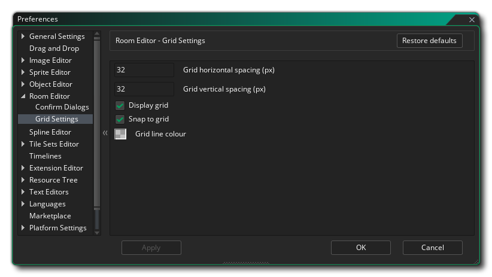

Las Preferencias del Editor de sala se utilizan para definir cómo se verá y se comportará el editor de sala. La configuración general es la siguiente:
- Distancia de comienzo de fundido de cadena (px): establece la distancia desde la ventana principal para que el enlace de cadena se desvanezca. El valor predeterminado es 10 px.
- Distancia de detención de fundido de cadena (px): establece la distancia desde la ventana principal para que el eslabón de la cadena se desvanezca al final. El valor predeterminado es 100 px.
- Alfa mínimo de cadena: Establece el valor alfa final después del punto de disminución gradual de la cadena alfa. El valor predeterminado es 0.3.
- Espaciado de profundidad de capa predeterminado: cuando crea múltiples capas en el editor de sala, se le asigna automáticamente una profundidad en función de su posición dentro de la lista de capas. Esta profundidad se incrementa por la cantidad dada aquí. El valor predeterminado es 100, por lo que cada capa tendrá una capa previa + 100 en profundidad.
- Ancho de sala predeterminado: establece el ancho inicial que se seleccionará como predeterminado para una sala nueva. El valor predeterminado es 1024 px.
- Altura de la habitación predeterminada: establece la altura inicial que se seleccionará como la predeterminada para una nueva sala. El valor predeterminado es 768px.
- Agregue capas de habitación predeterminadas: cuando crea cualquier recurso de sala nuevo, GameMaker Studio 2 generará un par de capas "base" para usted: una capa de fondo y una capa de instancia. Puede desactivar ese comportamiento aquí para que las nuevas salas no tengan capas prefabricadas. Esto está predeterminado.
- Mostrar vistas de sala: si tiene vistas activas dentro de una sala, esto se muestra mediante un contorno donde los límites de la vista estarían dentro de la sala, y la visibilidad de esta área se puede alternar utilizando el botón dedicado en el editor mismo. Sin embargo, puede elegir que los límites de vista sean invisibles cuando abre una habitación anulando la marca de esta opción (el botón todavía se puede usar para mostrarlos de nuevo). El valor predeterminado está activado, lo que hace visibles los límites cuando abre una habitación.
El resto de las opciones generales están relacionadas con los diferentes colores que se utilizan a lo largo de la interfaz del editor de sala, y si hace doble clic en cualquiera de las muestras, puede editar el color para esa configuración.
Hay otras opciones disponibles para editar en las subcategorías que se enumeran a continuación:
Las preferencias de Confirmar cuadros de diálogo se utilizan para cambiar los mensajes que se muestran en el editor de sala cuando realiza determinadas acciones. Los mensajes que puedes cambiar son:
- Respuesta automática a la actualización de las profundidades de las capas: cuando se cambian las profundidades de las capas, se muestra un mensaje para advertirle que al hacer esto también se actualizarán automáticamente todas las demás profundidades de las capas. Con esta opción, puede elegir mostrar el mensaje, hacer que actualice las capas como si hubiera hecho clic en "Aceptar", o que no actualice nada como si hubiera hecho clic en "No".
- Respuesta automática a la advertencia de bloqueo de capa: si intenta eliminar una capa en la sala y está bloqueada, se le mostrará un mensaje por defecto. Sin embargo, establecer esta opción en "Aceptar" no mostrará el mensaje y simplemente no le permitirá eliminar la capa.
- Respuesta automática a la advertencia de bloqueo de elemento: si intenta eliminar un elemento que está bloqueado, se le mostrará un mensaje por defecto. Sin embargo, establecer esta opción en "Aceptar" no mostrará el mensaje y simplemente no le permitirá eliminar el elemento.
- Respuesta automática a la capa de propietario de elemento advertencia bloqueada: si intenta eliminar un elemento en una capa y la capa resulta estar bloqueada (incluso si el elemento no está), se le mostrará un mensaje por defecto para informarle que puede no se haga. Sin embargo, establecer esta opción en "Aceptar" no mostrará el mensaje y simplemente no le permitirá eliminar el elemento.
- Respuesta automática al error de arrastre de recursos no válido: si intenta agregar un recurso a una capa que no está designada para ese tipo de recurso (como agregar un sprite a una capa de ruta), se le mostrará un mensaje por defecto para informar usted que no se puede hacer. Sin embargo, establecer esta opción en "Aceptar" no mostrará el mensaje y simplemente no le permitirá agregar el recurso.
- Respuesta automática a la eliminación de elementos de la sala de padres: aquí puede elegir qué sucede cuando elimina un elemento que forma parte de una sala de padres (y por lo tanto está presente en todas las salas de juegos). El valor predeterminado es mostrarle un mensaje de advertencia y le permite decidir qué hacer, pero puede configurarlo como "Eliminar todo" para suprimir el mensaje y continuar con la eliminación del elemento de la sala principal y todos sus elementos secundarios, o puede seleccione "Mantener todo" para suprimir el mensaje cancelar la eliminación.
- Respuesta automática a la eliminación de la capa de sala principal: aquí puede elegir qué sucede cuando elimina una capa que forma parte de una sala principal (y por lo tanto está presente en todas las salas secundarias). El valor predeterminado es mostrarle un mensaje de advertencia y le permite decidir qué hacer, pero puede configurarlo como "Eliminar todo" para suprimir el mensaje y continuar con la eliminación de capa de la sala principal y todos sus elementos secundarios, o puede seleccione "Mantener todo" para suprimir el mensaje cancelar la eliminación.
- Respuesta automática al error de arrastre de la selección de capa no válida: aquí puede elegir qué sucede cuando arrastra un recurso al editor de sala cuando ha seleccionado varias capas en el editor de capa (o no ha seleccionado ninguna capa). El valor predeterminado es mostrar un mensaje de advertencia, pero puede establecer esta opción en "Aceptar" para suprimir el mensaje y continuar, sin agregar ningún recurso.
- Respuesta automática al error de arrastre de la capa bloqueada o invisible: aquí puede elegir qué sucede cuando arrastra un recurso a una capa que se ha bloqueado o que está marcada como invisible. El valor predeterminado es mostrar un mensaje de advertencia, pero puede establecer esta opción en "Aceptar" para suprimir el mensaje y continuar, sin agregar ningún recurso.
Las preferencias de Configuración de cuadrícula se usan para cambiar el funcionamiento de la superposición de cuadrícula, con las siguientes opciones disponibles:
- Espacio horizontal en cuadrícula (px) - Esto establecerá el espacio horizontal para las celdas ceñidas de la cuadrícula de la sala en píxeles. El valor predeterminado es 32px.
- Espacio vertical de la cuadrícula (px) - Esto establecerá el espacio vertical para las celdas ceñidas de la cuadrícula de la sala en píxeles. El valor predeterminado es 32px.
- Cuadrícula de visualización: esta opción activará o desactivará la cuadrícula de la sala cuando abra por primera vez una habitación. Está activado por defecto, pero incluso si está apagado, puede habilitarlo de nuevo utilizando el botón apropiado en el editor de sala.
- Ajustar a la cuadrícula: con esta opción, puede establecer si una habitación tendrá los elementos ajustados a la cuadrícula de la sala de forma predeterminada o no cuando se abra inicialmente una sala. Está activado por defecto, pero incluso si está apagado, puede habilitarlo de nuevo utilizando el botón apropiado en el editor de sala.
- Color de línea de cuadrícula: esta opción le permite establecer el color (incluido el componente alfa) de las líneas de cuadrícula de la sala. El valor predeterminado es (rgba) #FFFFFF30.